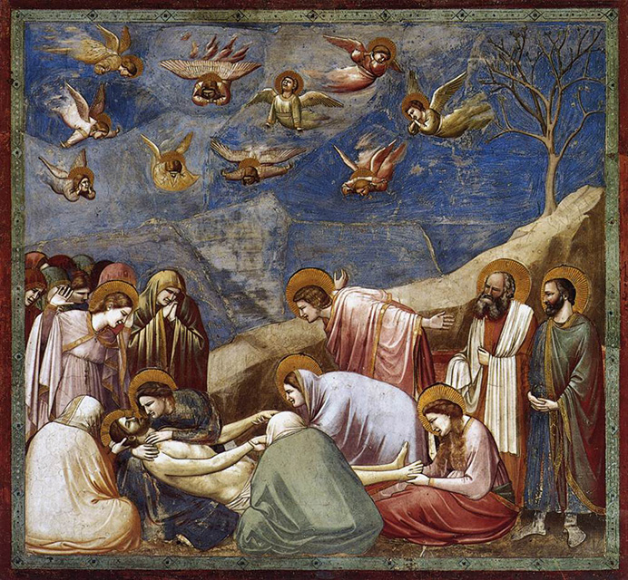

Most Viewed

Woman and Child on the Seashore
Pablo Picasso

Family of Saltimbanques
Pablo Picasso

The Arnolfini Portrait is an oil painting on oak panel dated
1434 by
the
Early Netherlandish painter Jan van
Eyck. The painting is a small full-length double portrait, which is believed to represent
the
Italian merchant Giovanni
di Nicolao Arnolfini and possibly his wife, presumably in their home in the Flemish city of
Bruges.
It is considered one
of the more original and complex paintings in Western art because of the iconography, the
unusual
geometric orthogonal
perspective, the use of the mirror to reflect the space, and that the portrait is considered
unique
by some art
historians as the record of a marriage contract in the form of a painting.
learn more